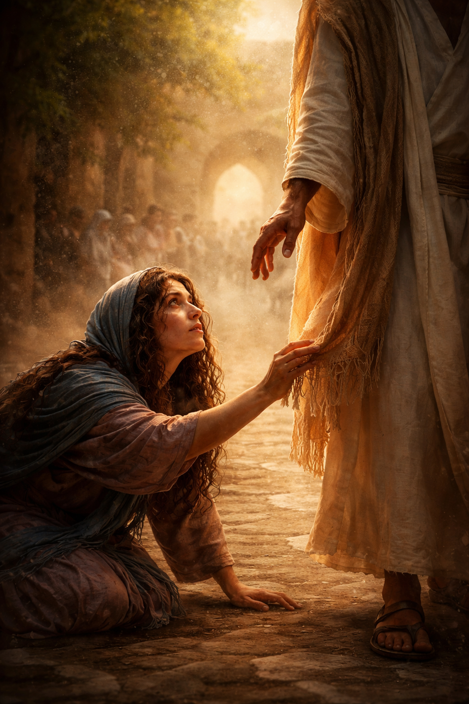

Type: കവിത
Written by: സിനി തോമസ്
📝 കവിതയെക്കുറിച്ച് എഴുത്തുകാരി
യഹൂദ സ്ത്രീകൾ ആർത്തവ സമയത്ത് അശുദ്ധരായി കരുതപ്പെട്ടിരുന്ന കാലത്ത് പന്ത്രണ്ടു വർഷമായി രക്തസ്രാവക്കാരിയായിരുന്ന ഒരു സ്ത്രീയുടെ അനുഭവമാണ് ഈ കവിതയുടെ പശ്ചാത്തലം. സമൂഹത്തിൽ നിന്ന് മാറിനിർത്തപ്പെട്ടും സ്വയം മറഞ്ഞും മറച്ചും ജീവിച്ച അവൾ, യേശുവിന്റെ വസ്ത്രത്തിന്റെ വിളുമ്പിൽ എങ്കിലും തൊട്ടാൽ താൻ സുഖം പ്രാപിക്കും എന്ന് വിശ്വസിച്ചു. ആൾക്കൂട്ടത്തിനിടയിൽ യേശു ചോദിച്ച “ആരാണ് എന്നെ തൊട്ടത്?” എന്ന ചോദ്യം, ഈ കവിതയിൽ ആത്മീയമായൊരു അന്വേഷണമായി ഉയർന്നുവരുന്നു.
അതുപോലെ തന്നെ, നട്ടുച്ച നേരത്ത് ആരും വരാത്ത സമയം നോക്കി വെള്ളം കോരാൻ വന്ന സ്ത്രീയുടെയും അനുഭവം ഇവിടെ ഓർമ്മിക്കപ്പെടുന്നു. അവളോട് ദാഹജലം ചോദിച്ച യേശു, ജീവിതത്തിലെ പാളിച്ചകൾ കൊണ്ട് മാറ്റിനിർത്തപ്പെട്ടിരുന്ന അവൾക്ക് “ജീവജലം” വാഗ്ദാനം ചെയ്യുന്നു. ഈ സംഭവങ്ങൾ മനുഷ്യന്റെ ഉള്ളിലെ വേദന, തിരച്ചിൽ, സ്പർശം, മോചനം എന്നിവയെക്കുറിച്ചുള്ള ആഴമുള്ള ബോധ്യങ്ങളായി ഈ കവിതയിൽ രൂപാന്തരപ്പെടുന്നു.